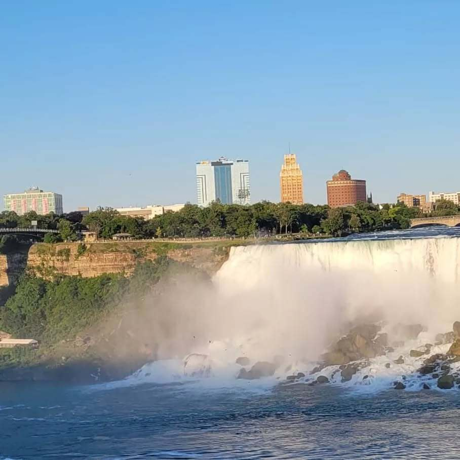
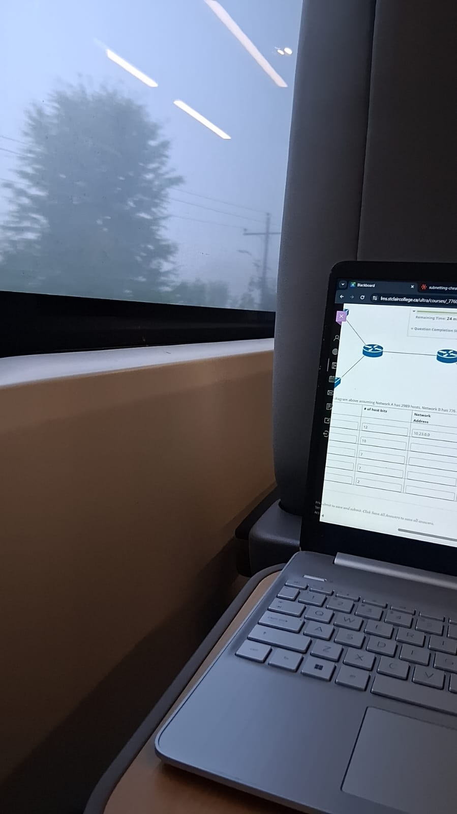
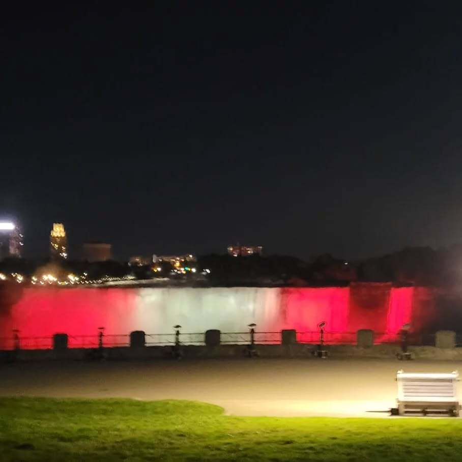

Canada 🍁
I moved here is 2016. Exploring This province of Ontario is fun, from the beautiful Niagara Falls to the vibrant city life of Toronto, to the peaceful city of Windsor. Each place has its own unique charm and attractions. I genuinely enjoy going places and traveling.



JAPAN 🎍
Japan is an incredible country with a rich culture and history. From the bustling streets of Tokyo to the serene temples of Kyoto, there is so much to see and experience. This is a place I would love to visit one day. The food, technology, and traditions are all fascinating. I specifically want to visit during cherry blossom season to see the beautiful pink flowers in full bloom. Another reason i want to visit Japan is to get better at fashion and shopping as Japan is known for its unique and trendy fashion scene. It would be amazing to explore the various shopping districts and find some unique pieces to add to my wardrobe, an all around fun time, from the food, to the spa, to the culture, to the fashion.